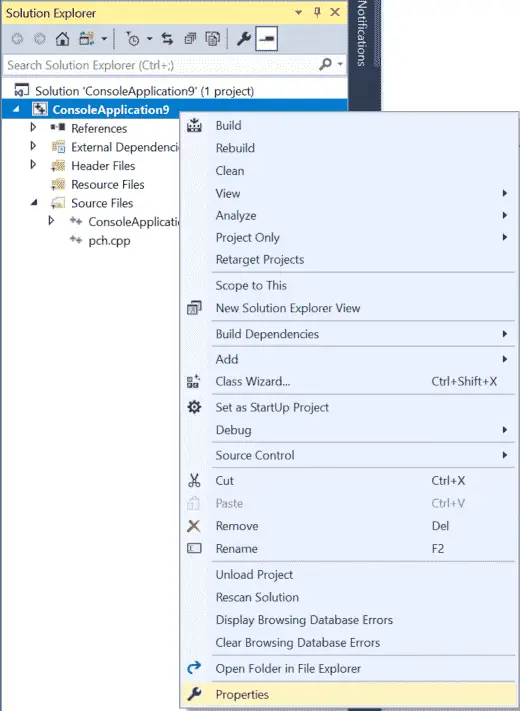
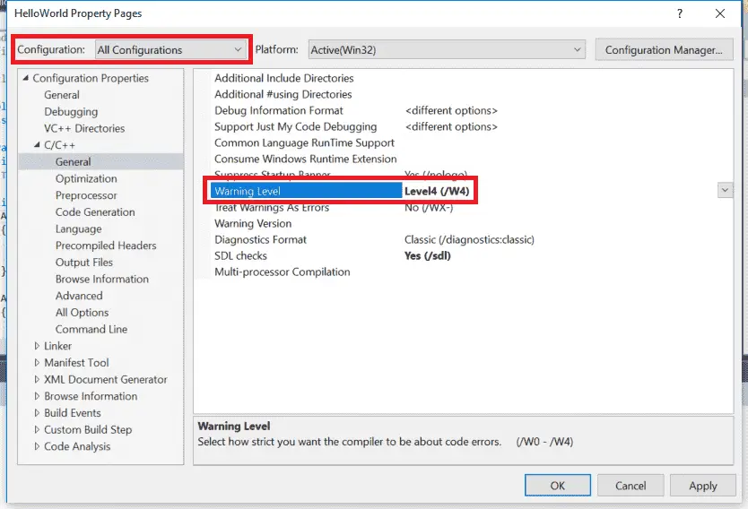
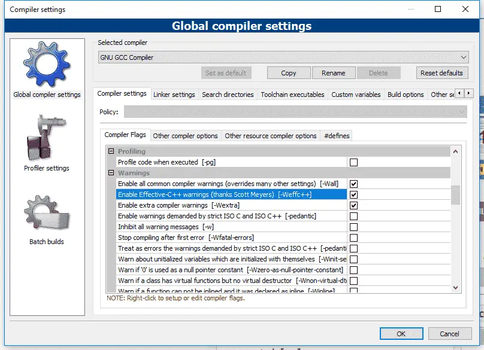
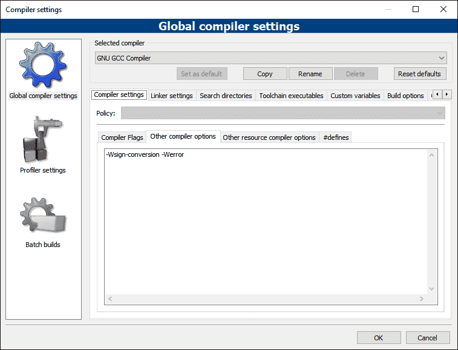
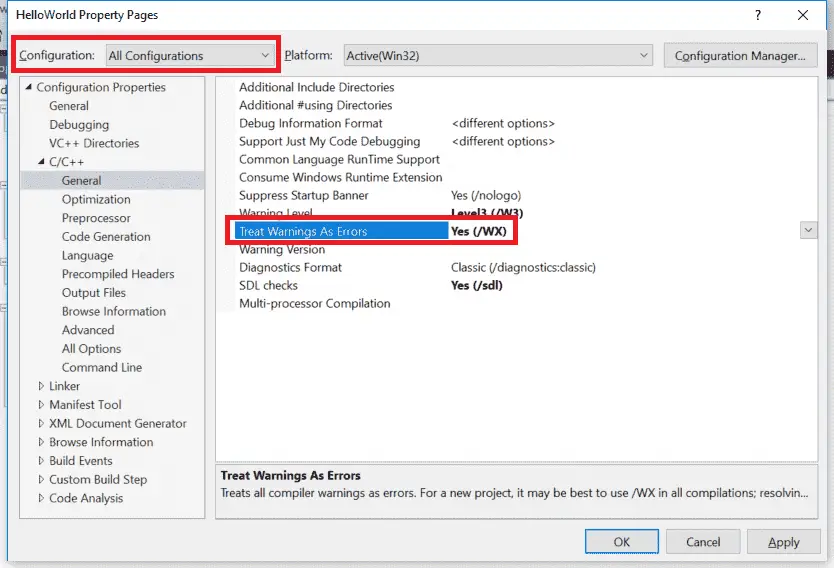

0.11 — Configurer votre compilateur : niveaux d'avertissement et d'erreur
Lorsque vous écrivez vos programmes, le compilateur vérifie que vous avez respecté les règles du langage C++ (en supposant que vous ayez désactivé les extensions du compilateur, comme indiqué dans la leçon 0.10 -- Configurer votre compilateur : extensions du compilateur). Si vous avez fait quelque chose qui viole définitivement les règles du langage, alors votre programme est mal formé (ill-formed).
Dans la plupart des cas, lorsque le compilateur rencontre un problème quelconque, il émet un message de diagnostic (souvent appelé simplement diagnostic). La norme C++ ne définit pas la manière dont les messages de diagnostic doivent être classés, formulés, ni la façon dont ces problèmes doivent affecter la compilation du programme. Cependant, les compilateurs modernes ont traditionnellement adopté les conventions suivantes :
- Une erreur de diagnostic (erreur en abrégé) signifie que le compilateur a décidé d'interrompre la compilation, car il ne peut pas poursuivre ou juge l'erreur suffisamment grave pour s'arrêter. Les erreurs de diagnostic générées par le compilateur sont souvent appelées erreurs de compilation (compilation errors, compiler errors ou compile errors).
- Un avertissement de diagnostic (avertissement en abrégé, ou warning) signifie que le compilateur a décidé de ne pas interrompre la compilation. Dans ce cas, le problème est simplement ignoré et la compilation se poursuit.
Point clé
Les compilateurs déterminent si un problème non bloquant est un avertissement ou une erreur. Bien qu'ils s'accordent généralement sur cette classification, il arrive parfois qu'ils ne soient pas d'accord : un compilateur émet une erreur tandis qu'un autre émet un avertissement pour le même problème.
Pour vous aider à localiser le problème, les messages de diagnostic contiennent généralement le nom du fichier et le numéro de ligne où le compilateur a détecté le problème, ainsi qu'un texte décrivant ce qui était attendu et ce qui a été trouvé. Le problème réel peut se situer sur cette ligne ou sur une ligne précédente. Une fois que vous avez corrigé le problème à l'origine du diagnostic, vous pouvez recompiler pour vérifier que le message de diagnostic associé n'est plus généré.
Dans certains cas, le compilateur peut identifier du code qui ne viole pas les règles du langage, mais qu'il juge potentiellement incorrect. Dans ces cas, il peut décider d'émettre un avertissement pour signaler au programmeur que quelque chose semble suspect. Ces problèmes peuvent être résolus soit en corrigeant le défaut signalé par l'avertissement, soit en réécrivant les lignes de code incriminées de manière à ce que l'avertissement ne soit plus généré.
Pour les lecteurs avancés
Nous montrons un exemple d'instruction techniquement légale, mais que les compilateurs modernes jugent suspecte, dans la leçon 7.7 -- Liaison externe et déclarations anticipées de variables.
Dans de rares cas, il peut être nécessaire de demander explicitement au compilateur de ne pas générer un avertissement particulier pour la ligne de code en question. C++ ne propose pas de moyen officiel pour le faire, mais de nombreux compilateurs (dont Visual Studio et GCC) offrent des solutions (via des directives #pragma non portables) pour désactiver temporairement les avertissements.
Bonne pratique
N'accumulez pas les avertissements. Résolvez-les au fur et à mesure que vous les rencontrez (comme s'il s'agissait d'erreurs). Sinon, un avertissement concernant un problème sérieux risque de se perdre parmi les avertissements concernant des problèmes mineurs.
L'éditeur de liens (linker) peut également générer des erreurs de diagnostic s'il rencontre, lors de l'édition des liens, un problème qu'il ne peut pas résoudre.
Augmenter les niveaux d'avertissement
Par défaut, la plupart des compilateurs ne génèrent d'avertissements que pour les problèmes les plus évidents. Cependant, vous pouvez demander à votre compilateur d'être plus exigeant dans l'émission d'avertissements, et il est généralement judicieux de le faire.
Bonne pratique
Augmentez vos niveaux d'avertissement, surtout pendant votre apprentissage. Les informations de diagnostic supplémentaires peuvent aider à identifier les erreurs de programmation susceptibles de provoquer un dysfonctionnement de votre programme.
Pour les utilisateurs de Visual Studio
Pour augmenter vos niveaux d'avertissement, faites un clic droit sur le nom de votre projet dans la fenêtre Explorateur de solutions, puis choisissez Propriétés :

Dans la boîte de dialogue Projet, vérifiez d'abord que le champ Configuration est réglé sur Toutes les configurations.
Sélectionnez ensuite C/C++ > onglet Général et réglez Niveau d'avertissement sur Niveau4 (/W4) :

Remarque : ne choisissez pas Activer tous les avertissements (/Wall), sans quoi vous serez submergé d'avertissements générés par la bibliothèque standard C++.
Visual Studio désactive par défaut les avertissements de conversion signé/non signé, qui sont pourtant utiles. Si vous utilisez Visual Studio 2019 ou une version plus récente, activons-les :
- Depuis C/C++ > onglet Ligne de commande, dans Options supplémentaires, ajoutez
/w44365. Cela demande au compilateur d'activer les avertissements de conversion signé/non signé au niveau d'avertissement 4 (que vous avez activé ci-dessus). - Depuis C/C++ > onglet Inclusions externes, réglez Niveau d'avertissement des en-têtes externes sur Niveau3 (/external:W3). Cela demande au compilateur de compiler les en-têtes de la bibliothèque standard au niveau d'avertissement 3 (au lieu de 4), afin que la compilation de ces en-têtes ne déclenche pas cet avertissement.
L'onglet « Inclusions externes » n'apparaît pas sur la capture ci-dessus, mais il figure dans VS Community 2019 ou une version plus récente, entre les onglets « Informations de navigation » et « Avancé ». Consultez ce lien, qui contient une photo récente de la boîte de dialogue comportant l'onglet « Inclusions externes ».
Si les paramètres ci-dessus sont correctement réglés, la compilation du programme suivant devrait générer l'avertissement C4365 :
void foo(int)
{
}
int main()
{
unsigned int x { 5 };
foo(x);
return 0;
}
Si vous ne voyez pas l'avertissement, vérifiez les onglets Sortie et Liste d'erreurs (s'ils existent).
Pour les utilisateurs de Code::Blocks
Depuis le menu Settings > Compiler > onglet Compiler settings, repérez et cochez les options correspondant à -Wall, -Weffc++ et -Wextra :

Allez ensuite dans l'onglet Other compiler options et ajoutez -Wconversion -Wsign-conversion dans la zone de texte :

Remarque : le paramètre -Werror est expliqué plus bas.
Pour les utilisateurs de gcc
Ajoutez les options suivantes à votre ligne de commande : -Wall -Weffc++ -Wextra -Wconversion -Wsign-conversion
Pour les utilisateurs de VS Code
Ouvrez le fichier tasks.json, repérez « args », puis localisez la ligne « ${file} » dans cette section.
Au-dessus de la ligne « ${file} », ajoutez les nouvelles lignes contenant les commandes suivantes (une par ligne) :
"-Wall",
"-Weffc++",
"-Wextra",
"-Wconversion",
"-Wsign-conversion",
Traiter les avertissements comme des erreurs
Il est également possible de demander à votre compilateur de traiter tous les avertissements comme des erreurs (auquel cas il interrompra la compilation s'il rencontre le moindre avertissement). C'est un bon moyen de vous imposer la recommandation de corriger tous les avertissements (si vous manquez d'autodiscipline, ce qui est le cas de la plupart d'entre nous).
Bonne pratique
Activez l'option « Traiter les avertissements comme des erreurs ». Elle vous obligera à résoudre tous les problèmes générant des avertissements.
Pour les utilisateurs de Visual Studio
Pour traiter les avertissements comme des erreurs, faites un clic droit sur le nom de votre projet dans la fenêtre Explorateur de solutions, puis choisissez Propriétés :
Dans la boîte de dialogue Projet, vérifiez d'abord que le champ Configuration est réglé sur Toutes les configurations.
Sélectionnez ensuite C/C++ > onglet Général et réglez Traiter les avertissements comme des erreurs sur Oui (/WX).

Pour les utilisateurs de Code::Blocks
Depuis le menu Settings > Compiler > onglet Other compiler options, ajoutez -Werror dans la zone de texte :
Pour les utilisateurs de gcc
Ajoutez l'option suivante à votre ligne de commande : -Werror
Pour les utilisateurs de VS Code
Dans le fichier tasks.json, ajoutez les options suivantes avant « ${file} », une par ligne :
"-Werror",
Source originale : https://www.learncpp.com/cpp-tutorial/configuring-your-compiler-warning-and-error-levels/